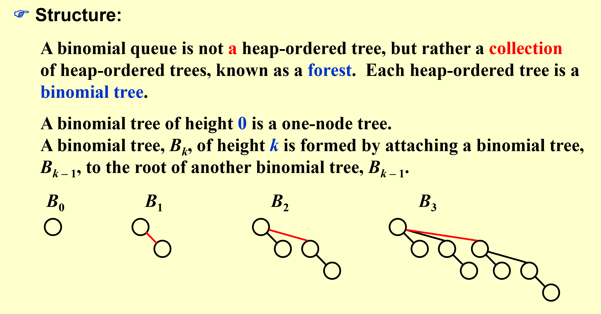
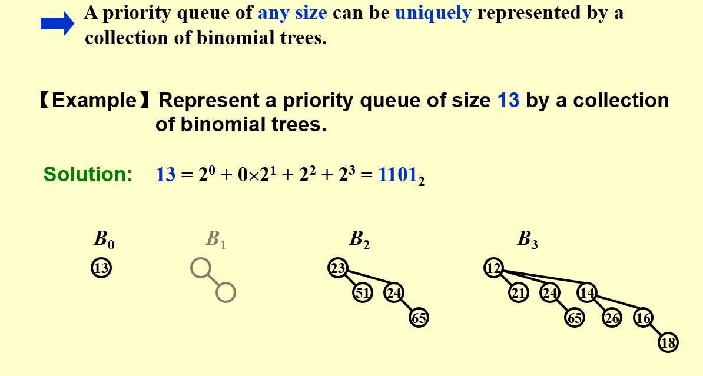
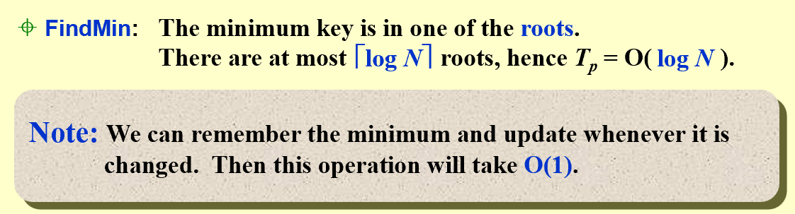
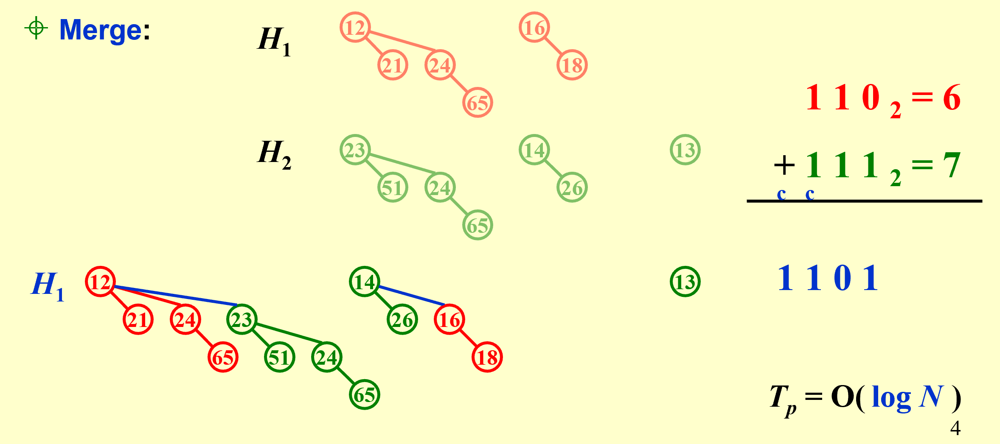
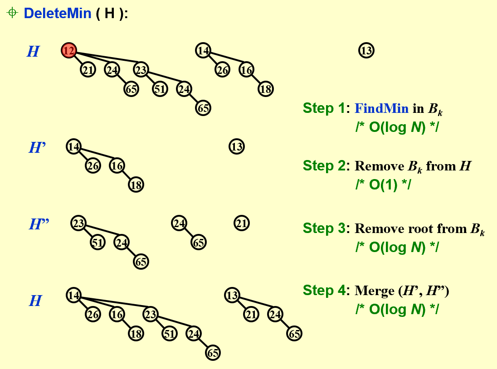
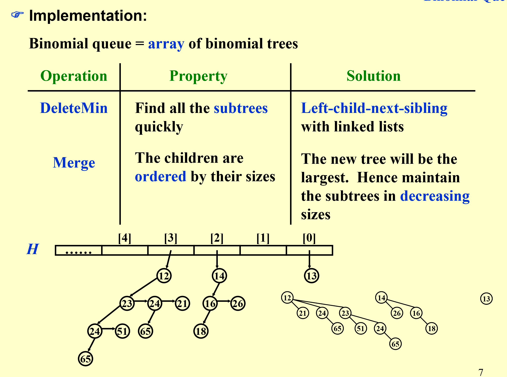
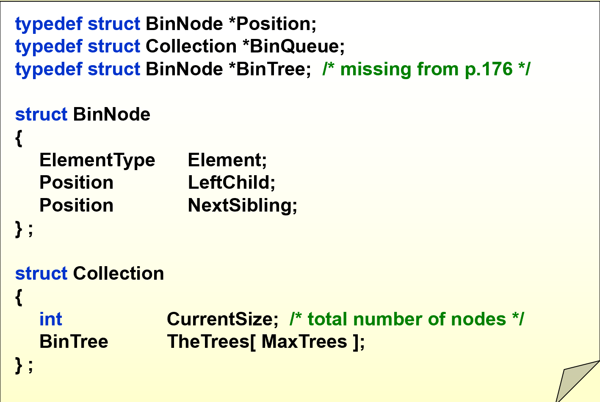
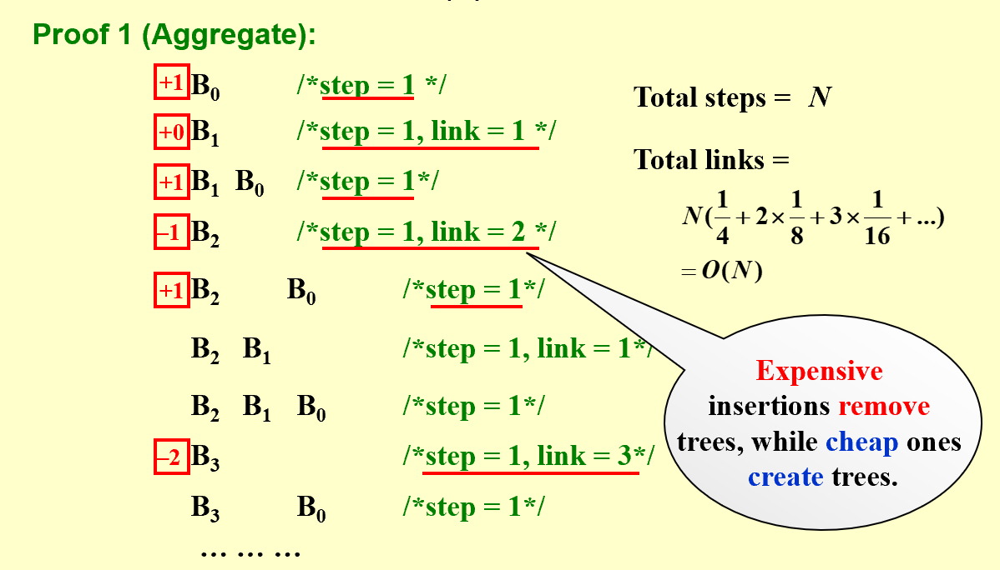
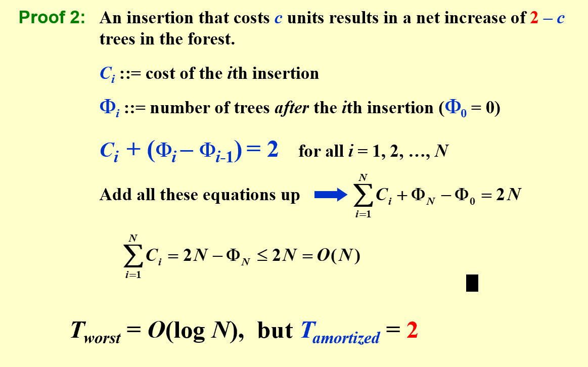

Advanced Data Structure
Binomial Queue
堆的其中一个应用就是优先队列（对原来队列中的元素附加一个优先级，优先级越高的元素越早出队）。本节介绍的二项队列（Binomial Queue也是优先队列的一种应用，只不过不同于之前
definition
二项队列(Binomial Queue)本质上是一系列二项树(Binomial Tree)的集合
Note
 下面是二项树的性质： - 二项树满足堆的性质，所有parent节点的值小于或大于child节点的值。 - k 阶二项树是由两个 k-1 阶二项树合并得到的（类似于二进制的进位）。合并方式是让其中一棵树成为另外一个树的根节点的子树。 - 二项树 \(B_k\) 总共 有 \(2^k\) 个节点，其中根节点有\(k\) 个节点 - 二项树 \(B_k\) 第d层的节点个数符合二项式定理中的二项式系数（根节点所在层为第0层）。如 \(B_3\) 各层节点数为：1，3，3，1
下面是二项队列的性质：  - 类似于二进制表达整数 - 由二项树第三条性质，一棵从位置0到k全放满元素的二项队列，总共有 \(1+2+3...+2^{k-1}+2^k=2^{k+1}-1\) 个节点。所以将N个元素使用二项队列储存，最多有 \(\lceil \log{N} \rceil\)个根节点
Methodology
为什么要这么设计二项队列？它的优势？
FindMin

Merge:

DeleteMin

Implementation
define structure

注意对于二项队列，我们一般不需要随机访问它的每个元素\(B_i\)，所以比起用PPT上用数组储存，更多时候还是用链表存储的。见Wiki

在实际实现时,我们还会使用 CurrentSize记录当前二项队列中的节点数。 目的:使用下面的循环
可以很方便地遍历二项队列的每一层（无论有没有元素）Operation Implementation
看懂PPT上的每个操作的代码实现，此处略
Amortized Annalysis
建队列只需要 O(N) 的平摊时间，相比左偏堆的优化:二项队列既使得合并操作达到了 O(logN)，又保持了和二叉堆一样线性建立时间。
Proof
 